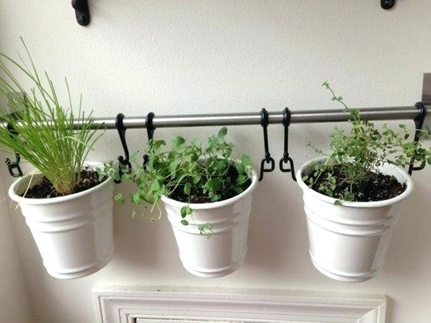

Vrei sa ai condimente proaspete pentru mancarurile tale in fiecare zi? Cea mai buna solutie este sa iti creezi propria gradina de plante aromatice chiar in bucatarie.

Acestea sunt cele mai bune plante aromatice pentru bucataria ta:
Busuiocul
Planteaza in ghivece micute seminte de busuioc si asaza vasele intr-o fereastra orientata catre sud. Busuiocul este o planta foarte iubitoare de soare si caldura.
Dafinul
Dafinul creste foarte bine in ghivece, pe tot parcursul anului. Aseaza-l la o fereastra orientata catre est sau vest si asigura-te ca locul in care il pui nu este foarte aglomerat.
Asmatuiul
Cultiva niste seminte de asmatui intr-un ghiveci, iar aceastea se vor dezvolta armonios, in conditii de lumina redusa si temperaturi cuprinse intre 18 si 21 de grade.
Arpagic
Ia un manunchi de arpagic din gradina ta si planteaza-l intr-un ghiveci la sfarsitul perioadei sale de vegetatie. Lasa vasul afara pana pana cand frunzele sale se usuca apoi muta-l iarna intr-un vas mai mare si asaza-l intr-un loc racoros, precum pivnita. Dupa cateva zile, poti sa il asezi la fereastra.
Patrunjelul
Poti replanta patrunjelul pentru gradina ta din interior fie folosind seminte, fie dezgropand un manunchi chiar din gradina de afara. Acesta are nevoie de foarte mult soare. El va creste lent, de aceea trebuie asezat intr-o fereastra orientata catre vest-est.
Oregano
Daca vrei sa plantezi oregano in gradina de plante aromatice din bucataria ta, nu trebuie decat sa tai cateva fire din el si sa le plantezi intr-un ghiveci. Vasul trebuie asezat insa intr-o fereastra luminoasa.
Recente
Vezi cele mai recente postari de pe website-ul nostru!

Beneficiile Alergarii
Ianuarie 13 3Alergarea e una dintre cele mai eficiente, necostisitoare moduri de a arde calorii și a fii în formă.

Tort de Ciocolata
Ianuarie 12 2Perfect pentru petreceri si cine festive, este usor de facut si delicios!

Propria ta gradina in bucatarie
Decembrie 30 21Vrei sa ai condimente proaspete pentru mancarurile tale in fiecare zi?